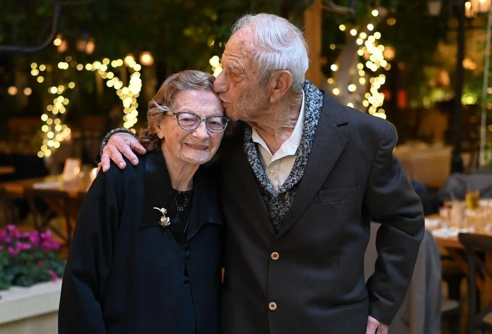

מברזיל לברור חיל
בשנת 1952 עלו אמיר וסוניה ארצה עם הגרעין השלישי לברור חיל. תחילה עברו הכשרה בקיבוץ תל יוסף, ובהמשך הגיעו לברור חיל — המקום שבו נבנו חייהם המשותפים, משפחתם והזיכרון הקהילתי שלהם.

לזכרם
אפשרות כהה נוספת, ללא פרק אבני דרך: עמוד מרוכז ומהודק שמתחיל ברצועת זיכרון, ממשיך לדברי הפרידה ומסתיים באלבום תמונות נבחרות.
אמיר פלוט ז״ל · 7.7.1926–1.4.2025
סוניה פלוט לבית רוזנבלט ז״ל · 12.6.1933–27.5.2025
רצועת זיכרון
בשנת 1952 עלו אמיר וסוניה ארצה עם הגרעין השלישי לברור חיל. תחילה עברו הכשרה בקיבוץ תל יוסף, ובהמשך הגיעו לברור חיל — המקום שבו נבנו חייהם המשותפים, משפחתם והזיכרון הקהילתי שלהם.
אמיר, שהיה מזכיר התנועה בברזיל, הגיע לברור חיל יחד עם סוניה. דמותו נקשרה לעשייה, אחריות וחיבור עמוק לאנשים.
סוניה לבית רוזנבלט נולדה בבאטאטאיס שבברזיל. גם סיפור “בית הטייס”, שנולד מרישום שגוי של שם העיר, הפך לחלק מהזיכרון המשפחתי.
דברי פרידה
דברי הפרידה מעניקים מקום לקול של המשפחה והקהילה — לא רק לסיכום החיים, אלא גם לנוכחות שנשארת אחרי הפרידה.
רגעים שנשמרו
בחירה מצומצמת ויפה מתוך האלבום המלא: משפחה, אירועים, ימים פשוטים ורגעים שבהם הזיכרון נעשה מוחשי.


באהבה ובהוקרה